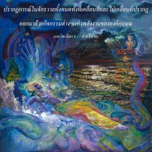
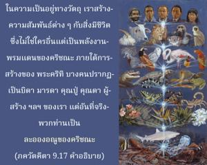
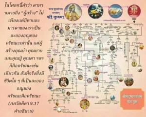

ข้าคือบิดา มารดา ผู้ค้ำจุน และบรรพบุรุษของจักรวาลนี้ ข้าคือจุดมุ่งหมายแห่งความรู้ ผู้ทำให้บริสุทธิ์ และคำพยางค์ โอม ข้าคือ ฤคฺ เวท สาม เวท และ ยชุรฺ เวท เช่นเดียวกัน



ปรากฏการณ์ในจักรวาลทั้งหมดทั้งที่เคลื่อนที่และไม่เคลื่อนที่ปรากฏออกมาด้วยกิจกรรมต่างๆแห่งพลังงานขององค์กฺฤษฺณ ในความเป็นอยู่ทางวัตถุเราสร้างความสัมพันธ์ต่างๆกับสิ่งมีชีวิตซึ่งไม่ใช่ใครอื่นแต่เป็นพลังงานพรมแดนขององค์กฺฤษฺณ ภายใต้การสร้างของ ปฺรกฺฤติ บางคนปรากฏเป็นบิดา มารดา คุณปู่ คุณตา ผู้สร้าง ฯลฯ ของเรา แต่อันที่จริงพวกท่านเป็นละอองอณูขององค์กฺฤษฺณ ในโศลกนี้คำว่า ธาตา หมายถึง “ผู้สร้าง” ไม่เพียงแต่บิดาและมารดาของเราเป็นละอองอณูขององค์กฺฤษฺณเท่านั้น แต่ผู้สร้างคุณย่า คุณยาย และคุณปู่ คุณตาก็คือองค์กฺฤษฺณเช่นเดียวกัน อันที่จริงสิ่งมีชีวิตใดๆที่เป็นละอองอณูขององค์กฺฤษฺณก็คือองค์กฺฤษฺณ ดังนั้นคัมภีร์พระเวททั้งหมดตั้งเป้าไปสู่องค์ศฺรี กฺฤษฺณเท่านั้น อะไรก็แล้วแต่ที่เราต้องการรู้ผ่านทางคัมภีร์พระเวทเป็นเพียงความเจริญก้าวหน้าไปสู่ความเข้าใจองค์กฺฤษฺณ ประเด็นที่ช่วยทำให้สถานภาพพื้นฐานของเราบริสุทธิ์ขึ้นคือองค์กฺฤษฺณโดยเฉพาะ ในลักษณะเดียวกันสิ่งมีชีวิตผู้ชอบถามเพื่อให้เข้าใจหลักธรรมคัมภีร์พระเวททั้งหมดก็เป็นละอองอณูขององค์กฺฤษฺณ ดังนั้นคือองค์กฺฤษฺณ เช่นกันใน มนฺตฺร พระเวททั้งหมดคำว่า โอํ เรียกว่า ปฺรณว เป็นคลื่นเสียงทิพย์คือองค์กฺฤษฺณเช่นเดียวกัน และเนื่องจากในบทมนต์ทั้งหมดของพระเวททั้งสี่เล่ม เช่น สาม, ยชุรฺ, ฤคฺ และ อถรฺว ปฺรณว หรือ โอํ-การ โดดเด่นมากเข้าใจกันว่าคือองค์กฺฤษฺณ